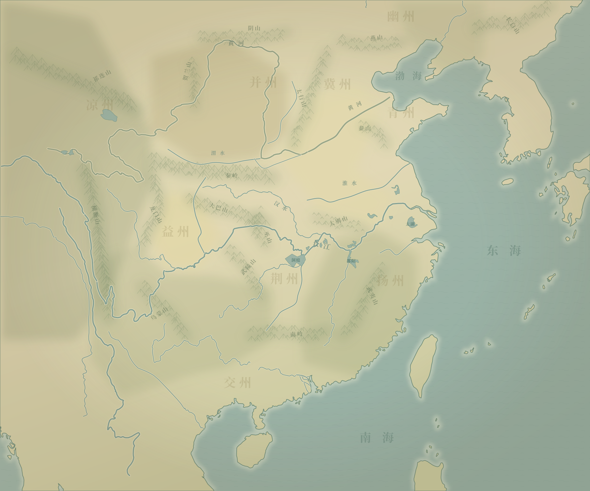

群雄逐鹿 · 建安元年
52
三国志
山河未定，英雄待时。
执一方之印，问天下之势。
续
继续游戏
启
新游戏
读
读取存档
乐
声音设置
正在展卷……
回合制君主经营 · 战棋 POC
52
三国志
策
全局政策
改革力
0
任务簿
战役簿
天下势力
军府记事
玩法
声音
菜单
春
建安元年 · 正月
每月收金 · 七月收粮
本月指令
6 / 6
结束本月
›

北
↑
西 东
南
−
100%
＋
全图
本势力
显示军府
定位
九州分览
城池图录
地图
原地图
势力
外交关系
州郡
交通线
城名
山川与古城位置示意 · 黄河下游取汉魏大致走向
政令
选择小沛的事务类别
政
内政
开发 · 治安
人
人事
寻访 · 登用
军
军事
征募 · 出征
交
外交
亲善 · 结盟
策
策略
流言 · 离间
军府记事
本月纪要
最新
收起浮窗
野战
小沛攻略战
攻城剩余期限
30
日
0
兵力
0
撤军
第
1
日 ·
我军行动
选择一项军令，再点击高亮地块
野战纪要
战况纪要